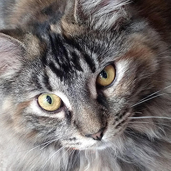

Hello!
Welcome to my page!
I am a current student at PSU Behrend majoring in Digital Media, Arts, and Technology (DIGIT). On this site I have posted digital projects, reflection based essays, and my resume. You can visit my other site on WordPress at StillWilliam.